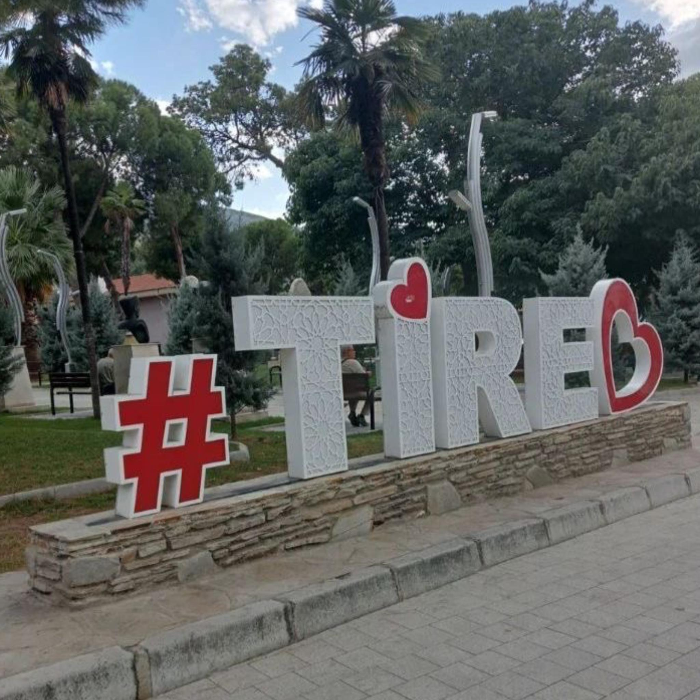
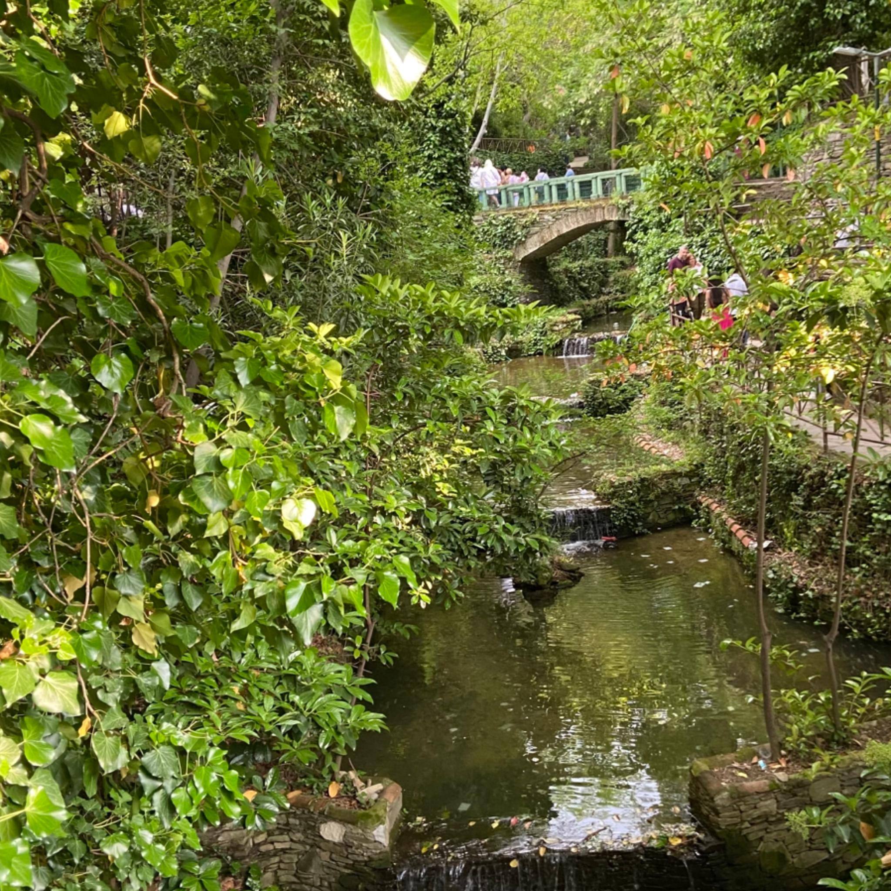
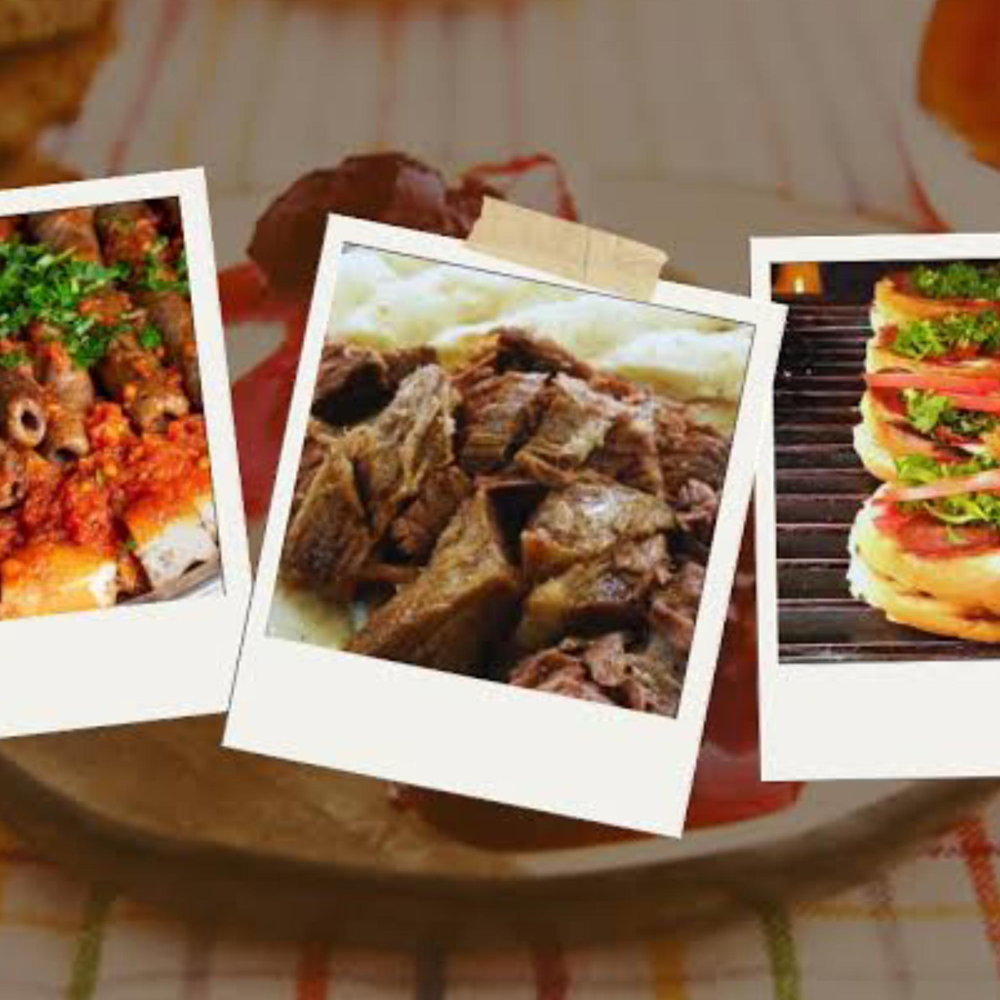

TİRE
Tarihin, Lezzetin ve Doğanın Buluştuğu Şehir
Tarihin, Lezzetin ve Doğanın Buluştuğu Şehir

İzmir’in doğusunda yer alan Tire, tarih boyunca birçok medeniyete ev sahipliği yapmış köklü bir yerleşim yeridir. Antik çağlarda Teira olarak bilinen ilçe, Lidyalılar, Persler...
daha fazlası
Tire’nin tarihi, Tunç Çağı’na, yani yaklaşık M.Ö. 3000’lere kadar uzanır. Bölgedeki ilk yerleşimlerin bu dönemde başladığı tahmin edilmektedir. Antik çağda Tire, Teira veya Tira adıyla anılmıştır...
daha fazlası
Tire Şiş Köfte, İzmir’in Tire ilçesine özgü, Ege mutfağının sevilen lezzetlerinden biridir. İnce uzun şekilde şişlere dizilerek hazırlanan bu köfte, özellikle odun kömüründe pişirilmesiyle meşhurdur. Diğer köfte çeşitlerinden en büyük farkı...
daha fazlası